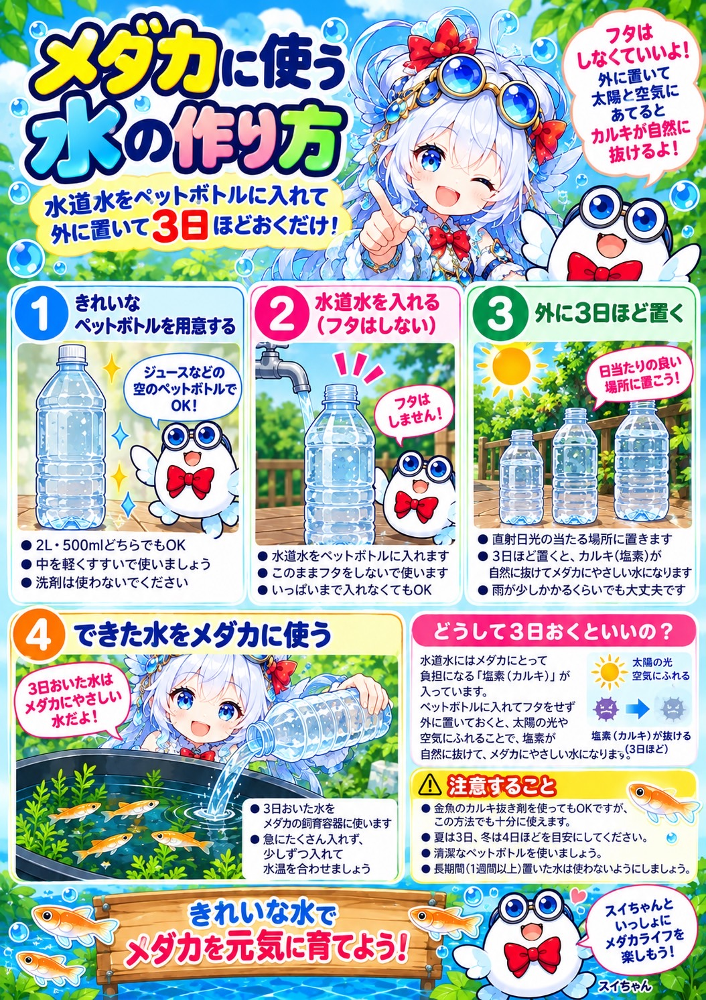
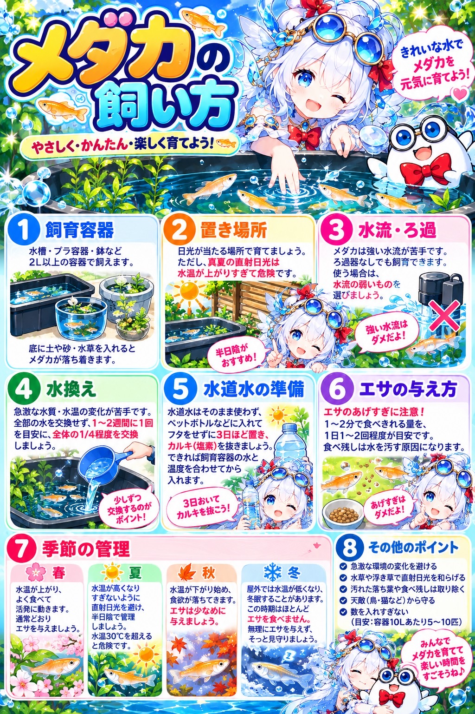

メダカを元気に育てる基本のステップ
メダカ飼育で一番大切なのは「水」です。初心者でも分かりやすい水作りと日々の管理のコツをご紹介します。
1. カルキ抜きと正しい水作り

水道水はそのまま使わない
水道水に含まれる塩素は刺激が強すぎます。カルキ抜き剤を使うか、汲み置きした水を日光に2〜3日当ててから使いましょう。
2. 日々の飼育とエサやりのコツ

与えすぎに注意！
食べ残したエサは水質悪化の原因になります。1〜2分で食べきれる量を、1日1〜2回に分けて与えてください。
3. 水替えのコツ
一度に全部の水を換えない
水替えは全体の3分の1〜半分程度を、古い水を少し残しながら定期的に行うのが長生きの秘訣です。